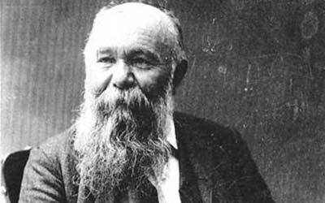

Glava šećera je pripovetka pisca Milovana Glišića, koja je postala klasično pripovedno štivo u srpskoj književnosti. Motiv podvale, karakterističan za ovog pisca, i u „Glavi šećera“ je i te kako prisutan i karakteriše srpsko društvo i njegovu stvarnost u drugoj polovini 19. veka. Pripovetka je prvi put objavljena u nastavcima u časopisu „Otadžbina“, 1875. godine. "Glava šećera“ je pripovetka čija je radnja jednostavna i teče pravolinijski. Tretira društveni problem - korupciju. Opisan je proces raslojavanja na srpskom selu u toku druge polovine devetnaestog veka, do kojeg dolazi sa prodorom robno-novčane privrede na selo. U novim uslovima srpski seljaci se ne snalaze, već propadaju pod teretom dugova, a korist od toga imaju zelenaši i korumpirani predstavnici vlasti.
Milovan Glišić je bio srpski književnik. Rođen je 7. januara 1847. godine u selu Gradac kod Valjeva, a preminuo 20. januara 1908. godine u Dubrovniku. Smatra se tvorcem srpske realističke pripovetke o selu i začetnikom realizma u srpskoj književnosti. „Glava šećera“, „Roga“, „Svirač“, „Raspis“ i mnoge druge danas su deo školskih udžbenika i obavezne lektire u osnovnim školama u Srbiji i regionu. Zahvaljujući njegovim prevodima brojna značajna dela ruske, francuske i nemačke književnosti prvi put su postala dostupna i na srpskom jeziku.
"Glava šećera“ je pripovetka čija je radnja jednostavna i teče pravolinijski. Tretira društveni problem - korupciju. Opisan je proces raslojavanja na srpskom selu u toku druge polovine devetnaestog veka, do kojeg dolazi sa prodorom robno-novčane privrede na selo. U novim uslovima srpski seljaci se ne snalaze, već propadaju pod teretom dugova, a korist od toga imaju zelenaši i korumpirani predstavnici vlasti. Nastavak pripovetke se dešava u kafani u Dubrovi gde se pije i smeje, ali i govori o svemu što muči narod. Tu seljak Radan Radanović priča kako se odvojio od brata, ali nije imao para za kuću pa je morao da ih pozajmi od lokalnog zelenaša Davida i da ne zna šta da radi i kako će uopšte da vrati pare sa ogromnom kamatom. Po odlasku iz kafane na brodu, pod vodenicom Radan ugleda crno dete koje se popelo na kola i odlomilo komad šećera sa glave koju je Radan kupio po prethodnoj narudžbi kapetana Maksima Sarmaševića. Kad su se začuli prvi petlovi dete je nestalo govoreći Radanu da se moli Bogu i da će da ga upamti. U drugoj priči se govori o kapetanu Sarmaševiću koji je prikazan kroz ironiju i oslikava predstavnike vlasti koji su bili pohlepni i podmitljivi. Kapetan je sa pandurom Đukom imao uigranu prevaru. Đuka je iznova i iznova prodavao seljacima istu glavu šećera koju oni kao poklon daju kapetanu jer on ne prima mito. Đuka je dobijao svaki treći dukat i bio je zadovoljan time. Kapetan je po okolnim selima držao govore u kojima bi usputno pomenuo koliko puta je od „dragih mu seljaka“ dobio razne lepe poklone, a seljaci bi se posle kod Đuke raspitivali šta bi to oni mogli da mu kupe. Đuka je svakom seljaku, kojem je trebala neka usluga od kapetana, prodavao istu glavu šećera. I tako u pedeset četiri sela. Dalje se u priči spominje scena na slavi kod zelenaša Davida Uzlovića gde se kapetan Sarmašević i David dogovaraju i prave plan da Radanu oduzmu sve šta mogu. Davidu se svideo Radanov vinograd, a kapetanu livada. Epilog priče se odigrava u kafani Kod petla koju je kapetan podigao parama od glave šećera. Tu se iz razgovora Đuke i njegovog poznanika Paje saznaje da je kapetan nabavio novu glavu šećera i novog pandura za svoj prnjavi posao, a da je Đuki ostao dužan 20 dukata od njegovog dela. Tad se pojavljuje osuđeni Radan koji pita za svoju decu koja rade kao najamničari. A onda Đuka priča šta se desilo Radanu. Vlasti su došle da rasprodaju Radanovu imovinu i kuću zbog duga prema Davidu. Radan nije mogao da izdrži i sav bes i ozlojeđenost su se ispoljili u tom trenutku i on ulazi u kuću i ubija Davida nakon čega je on osuđen na robiju. Pripovetka se završava kao i Radanov život - sumorno.

Glava šećera je jugoslovenski televizijski film snimljen 1991. godine u produkciji Televizije Beograd prema istoimenoj pripoveci Milovana Glišića iz 1875. godine. Ceo film se može pogledati na linku GLAVA ŠEĆERA (1991)